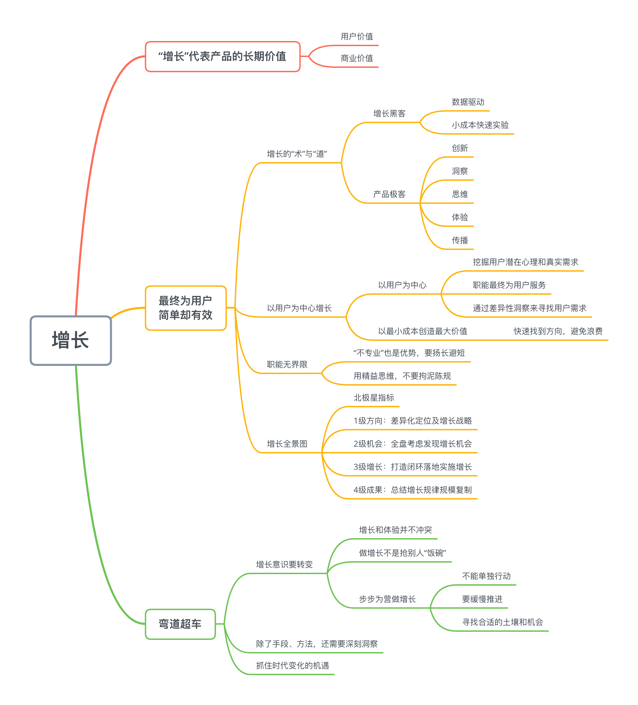
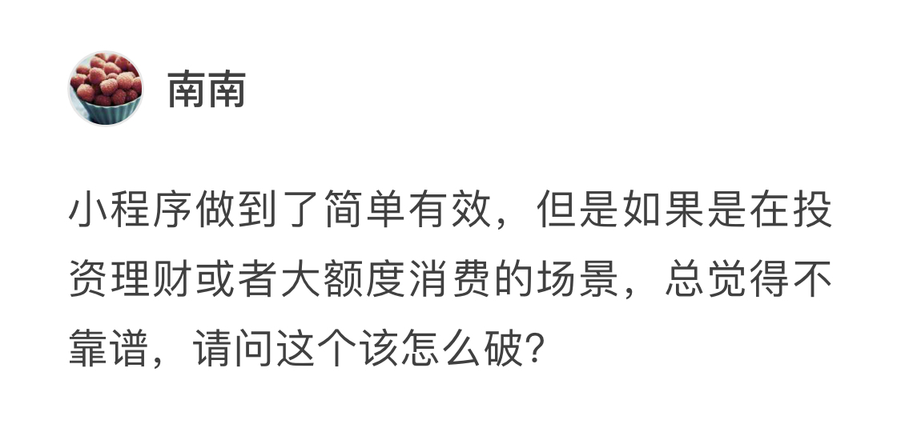
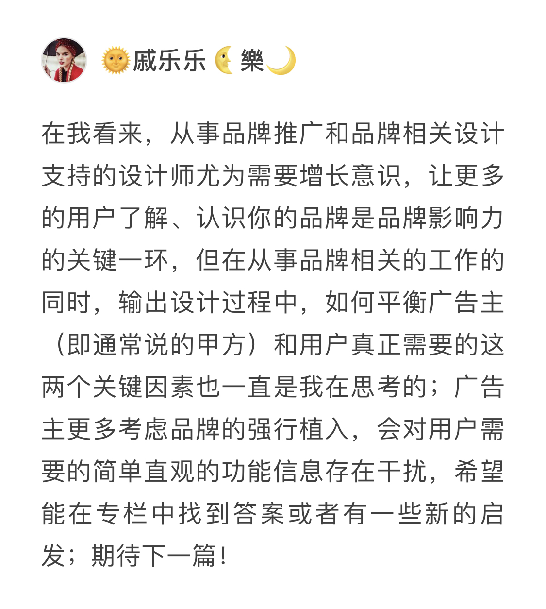
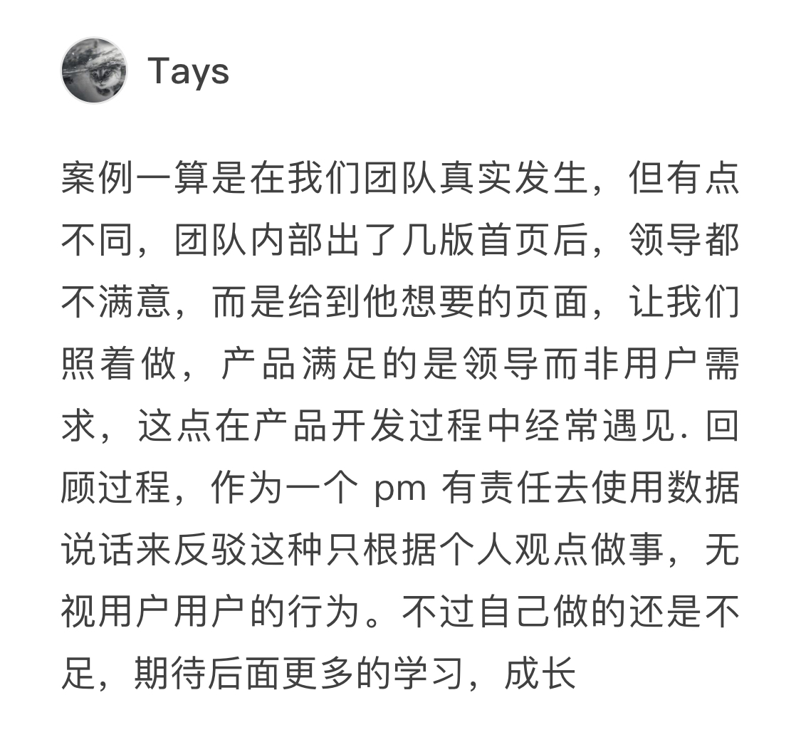
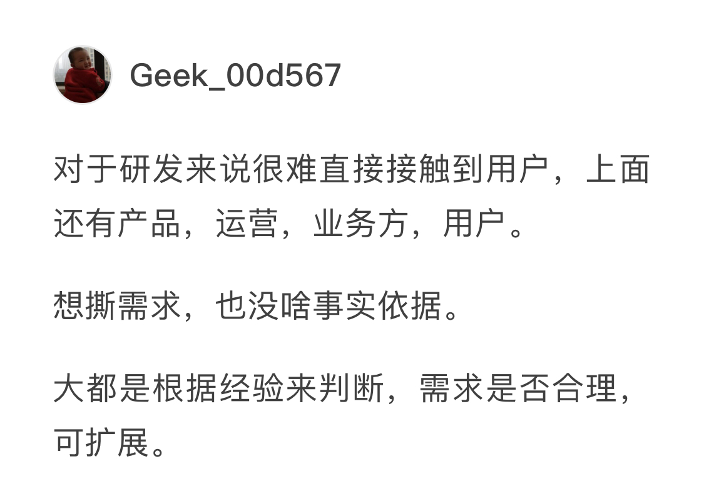
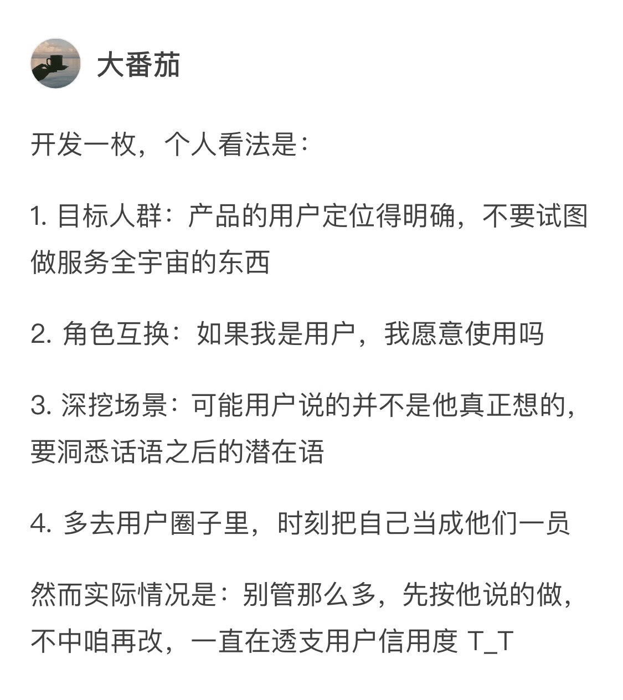
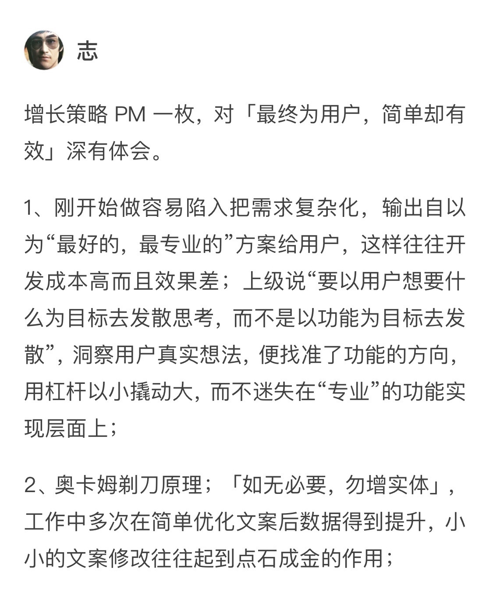
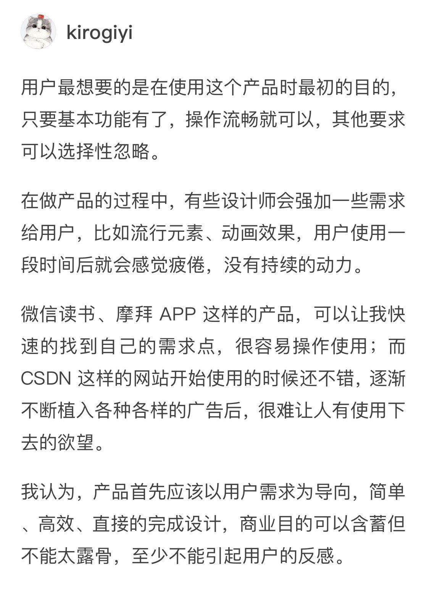
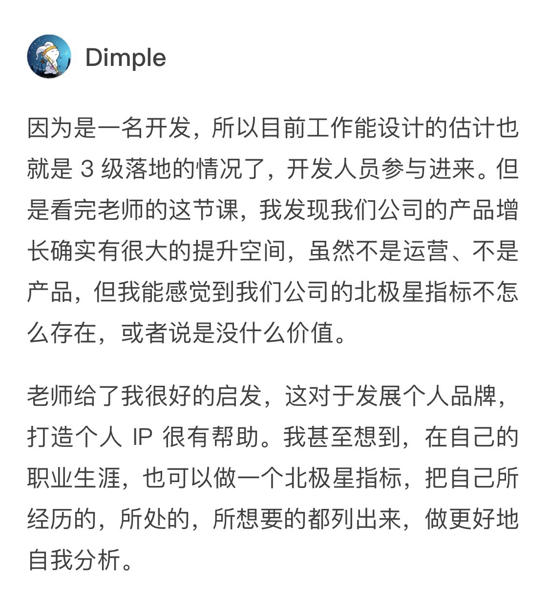

- 00 开篇词 人人都是增长官.md.html
- 01 预习 增长小白如何“弯道超车”？.md.html
- 02 预习 如何理解“增长”？.md.html
- 03 预习 不同职能如何做好增长？.md.html
- 04 预习 做增长如何处理职能间的矛盾？.md.html
- 05 正确目标找不对，天天加班也枉然.md.html
- 06 活学活用北极星指标.md.html
- 07 OKR如何助力增长？.md.html
- 08 不懂用户调研？那就对了！.md.html
- 09 调研目标：在差异性洞察中找到爆破点.md.html
- 10 数据分析：在“花式对比”中发现玄机.md.html
- 11 用户分类：围绕北极星指标细分人群.md.html
- 12 用户访谈：像侦探一样寻找破案线索（上）.md.html
- 13 用户访谈：像侦探一样寻找破案线索（下）.md.html
- 14 提炼用户差异，发现增长契机.md.html
- 15 挖掘产品优势，打破增长瓶颈.md.html
- 16 定位营销差异，抢占用户心智.md.html
- 17 一级方向：找到增长爆破点.md.html
- 18 B端产品如何调研？.md.html
- 19 全局规划增长机会.md.html
- 20 统筹全局的用户增长地图.md.html
- 21 案例解析：定义关键增长指标.md.html
- 22 正负双向洞察，找准切入点.md.html
- 23 二级机会：制定增长策略.md.html
- 24 为一家濒临破产的公司制定增长策略（上）.md.html
- 25 为一家濒临破产的公司制定增长策略（中）.md.html
- 26 为一家濒临破产的公司制定增长策略（下）.md.html
- 27 为什么指标数据怎么优化都不提升？.md.html
- 28 案例解析：打造增长闭环（上）.md.html
- 29 案例解析：打造增长闭环（下）.md.html
- 30 案例解析：唤醒沉睡用户（上）.md.html
- 31 案例解析：唤醒沉睡用户（下）.md.html
- 32 没有分解，就无缘增长.md.html
- 33 四个要点颠覆传统需求文档.md.html
- 34 三级落地：无限场景应用.md.html
- 35 手把手教你设计一次成功的实验（上）.md.html
- 36 手把手教你设计一次成功的实验（下）.md.html
- 37 积少可成多，别针换别墅.md.html
- 38 四级延续：增长组件库案例.md.html
- 39 以用户为中心增长.md.html
- 增长导航图 增长专栏的知识架构是怎样的？.md.html
- 尾声 结束意味着新的开始.md.html
- 预习答疑 你需要一张思维导图吗？.md.html
- 捐赠
预习答疑 你需要一张思维导图吗？
你好，我是刘津。
首先，我要告诉你，今天的内容不是正文，是送给你的加餐内容。
两周时间过去，我们的预习部分已经结束了。在经过4讲预习内容之后，相信你对“增长”已经有了一定的了解。
不过为了加深你的印象，我想在正文之外做个补充，将预习部分中的内容重新梳理一遍，以帮助你更好地理解。
也是偶然间，我看到有同学以思维导图的形式自行总结知识点，觉得这是一个可以推广的学习方法。
如果你还没有自行建立一个明确的逻辑体系，在这里我想用思维导图的形式帮你搭建一个框架。
这会是一个比较粗略的框架，你可以在这个框架内自行更改、补充。你要注意的是，不要拘泥于框架之中，因为给出它的最终目的，是让你形成独属于你自己的“增长攻略”。

除了这张思维导图之外，我还想把预习中的一些留言问答贴上来给你。
虽然小标题是“问题答疑”，今天的内容中也有几条并不是提问，而是同学们的个人洞见，我觉得他们的想法也可能对你有所帮助。
问题答疑
001
从“从0开始做增长”这个题目就可以看出来，学习这个专栏不需要增长基础。
其实增长不分岗位，是一种普适性的思维意识，专栏里面也介绍了很多实践技巧，互联网人群也可以了解以拓宽视野。学“增长”就像读大学一样，更重要的是培养一种思考问题的方式。这就是大学和技能培训班的区别。
002
增长是任何职能都需要具有的一种价值导向的思维。这就好像以前大家都说要有用户意识、体验意识是一个道理。
只不过在互联网进入下半场以后，大家更关心实际的价值，而不再追求泛泛的体验，这是时代的进步。
我认为增长黑客是增长时代的开拓者，率先考虑用创意、营销、数据等方式来驱动增长。“黑客”从字面上理解，有点不按常理出牌、无所不用其极的感觉。它背后缺乏的是可以复用的方法体系，别人学习的时候往往学到的是表面上的“壳”，这样解决不了实际问题。
这就好像初级的设计师经常借鉴他人的创意、风格一样，这些表层的东西有学习的必要，但是无法解决深层次的用户、产品问题。
所以，时代在进步，增长黑客也将面临进一步的升级。
003

“简单有效”不是单指形式上的简单，而是在思路上出奇不意，找到一击制胜的关键点，实现上未必简单。
目前很多企业都在开发金融类微信小程序，只不过它们并不是照搬了APP的功能，而是有所取舍做了精简，目标在于导流、客服和宣传。同一个产品的APP和小程序，这两者的北极星指标也是不一样的。
004

这让我突然想到前一段时间铂爵旅拍和BOSS直聘的电梯广告，让人不胜其烦。后来BOSS直聘很快换了一个新广告，虽然也是在不断重复，但是比之前柔和了不少，这让我对它倍添好感。
增长不是简单地复用已知的规律，也不是没完没了的想新创意，而是用“聪明”的方式寻找用户喜好和价值利益的平衡点。
005

其实这种情况我以前也遇到过。开始我以为是老板比较偏执，后来才发现因为我们思考问题不在一个维度上，老板懒得多废话。
所以，我觉得有两种情况，一种是老板确实主观需要通过数据来反馈；另外我们也需要多找老板沟通，了解他背后的想法和诉求。
006

看到这个问题，我突然想到一个朋友的例子可以解释你面临的问题。
有一位开发在头脑风暴会议中提出，每次发售理财产品的时候系统都会预警。这个现象引起了业务方的高度关注，他们经过研究，决定加大对理财产品的投入。
所以，研发想做增长时，不一定要把关注点放在撕需求上，而是可以从自己的优势出发，以技术专家视角提出需求方难以观察到的点，助力增长。
007

其实做增长也需要找到合适的环境和时机。
在产品初创阶段，快速迭代完善功能可能对产品生死来说更加重要，这本质上也是一种增长策略。到了合适的时机，企业才会重视精细化运营，那个时候你的作用就更大了。所以，顺势而为就好。
008

对于这位同学的感悟，我想谈谈自己的一点感想。
普通人喜欢不断地做加法，而大神们喜欢不断地做减法。还记得以前的洗衣机和电视机遥控器吗？上面布满了密密麻麻的各种按钮。但是那个时候大家的认知就是这样，觉得东西越多越好，这样就赚到了，这跟以前的人们从小物资紧缺有很大的关系。
而现在的物质世界太丰富了，所以人们开始去繁求简，这也是时代进步的表现。
所以，过去的经验和教训未必都正确。我们唯一的做法就是跟随时代的进步，改变旧有的意识。这也是为什么需要不断学习的原因。
009

我特别喜欢“以用户为中心增长”的这套理论，有个很重要的原因，就是你必须要学会“忘我”，这也是佛家所主张的，无形无意、顺其自然、无我无形。
这样你才能分出心来发现用户真正要的是什么。这不正是修行之道吗？做增长和修行修心其实也有异曲同工之妙。
010

其实我想讲这个课的初衷，就是希望能帮更多人思想升级，可以更好地把握自己的人生。毕竟在我们的生活中，工作不应该是全部，我们自己的人生“增值”才是最重要的。感谢你讲出了我的心声，也帮助更多小伙伴们理解这个课的终极价值。
问题答疑到这里就结束了，在这里我要感谢这几位同学的精彩提问。
@hua168- @南南- @戚乐乐樂- @Tays- @Geek_00d567- @大番茄- @志- @Kirogiyi- @Dimple
文章中的精彩提问与总结其实远不止这些，这里只是提取了一些有代表性的例子。
通过这些例子，我希望能够把文章中的知识点和同学们的一些个人总结分享出来，也希望同学们之间的思想碰撞能带给你一些不一样的思考。
通过思维导图和评论交流可以加深你的记忆。我想让知识真正地成为你的能力，从而助力增长。
如果你觉得今天的内容对你有些帮助，也欢迎你把文章分享给你的朋友。
© 2019 - 2023 Liangliang Lee. Powered by gin and hexo-theme-book.